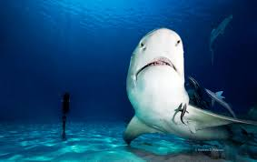

John Hong
Here is not only good scenery, and food better, metaphor beef stew mushrooms, Longtan bacon, but I love the most favorite is - small river fish.
There are a variety of small river fish species, first said dry fried small river fish. To prepare a small river fish, and then prepare cooking wine, onions, ginger, minced garlic, pepper powder, salt and other spices. Cheeks to the internal organs. Take a bowl, the small river fish with onions, ginger, cooking wine, minced garlic, pepper stirring marinate for about 20 minutes. And then put the appropriate amount of oil in the pot, the oil will be cured after the small salted fish into the fried one or so for about a minute. And then wait for the oil to boil again, and then into the fried one or so. Dry fried small rivers and rivers to do a good job.
The completion of the small river fish flavor three different taste. Small river fish meat delicate, spicy juice penetration, toughness, like a cup of sweet taste of wine, people memorable. So there was a visitor to taste the small river, improvisation Fu: far from the small river tours, the beauty of tourism to see endless. Xushui Yuanshui Tim fish is good, all the way spring full of lips.
how is it? Interesting? Interested readers can taste tasting, it will make you worthwhile trip!

Welcome to my website! Here you will learn about my time in America! (Write more later)
Links:
- Facebook
- Linkedin
- BLog
- Twitter
page1
page2
page3
page4